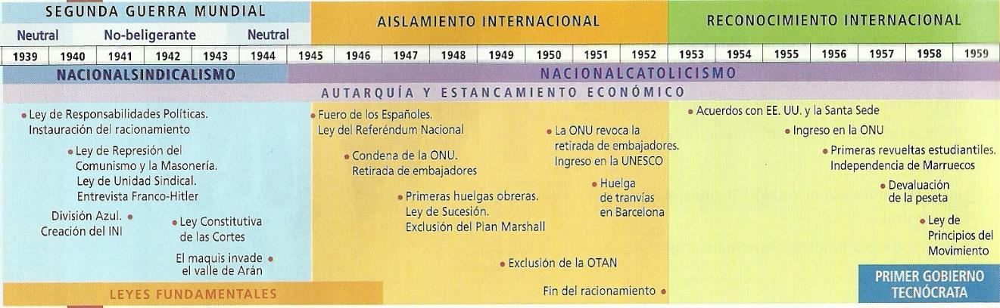
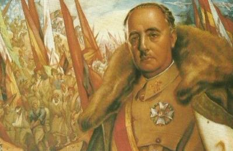
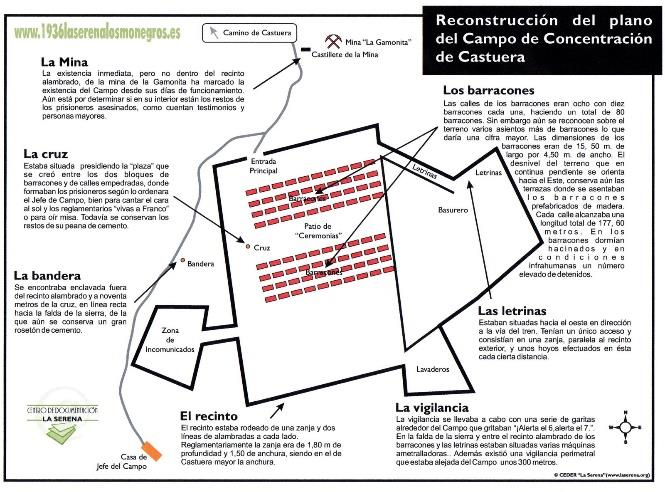
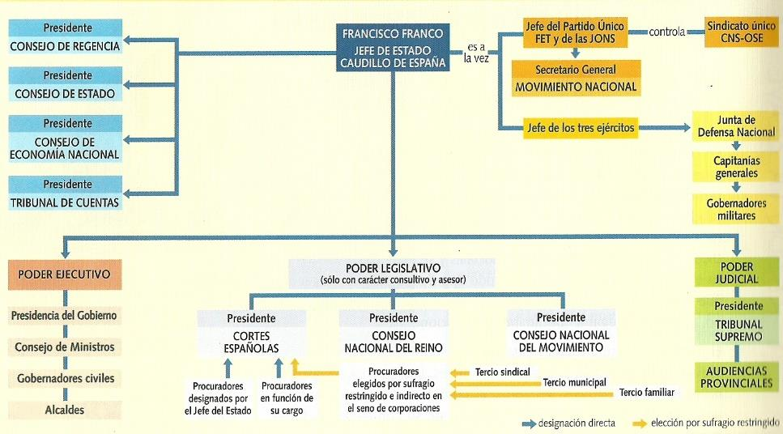
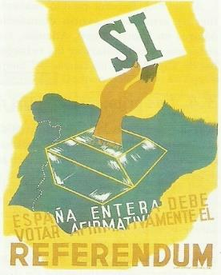
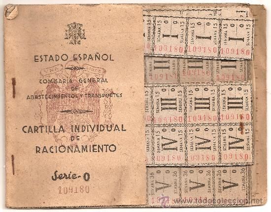

Tema 1: La Dictadura Franquista - Autarquía y Aislamiento (1939 - 1959)
La implantación de un régimen dictatorial de mando único, la violenta represión de posguerra, la farsa corporativa de las Leyes Fundamentales y el dramático estrangulamiento socioeconómico de los años del hambre.

Eje cronológico que resume la fase totalitaria de posguerra, la andadura autárquica y el posterior reconocimiento internacional de los años cincuenta1. El ADN del Régimen: Fundamentos Ideológicos y Familias Políticas
El régimen nacido de la Guerra Civil se configuró bajo la forma de una dictadura personalista de carácter autoritario, militarista y centralista, legitimada en origen por la victoria bélica de 1939. La concentración absoluta de poder se encarnó en la figura de Francisco Franco, proclamado como el Caudillo e investido de forma vitalicia con la Jefatura del Estado, del Gobierno, de las Fuerzas Armadas como Generalísimo, y de la única formación política permitida.

Mural alegórico de Francisco Franco representado como líder providencial de la patria tras el desenlace militar de 1939El ADN ideológico del franquismo no partió de un cuerpo doctrinal estructurado y coherente, sino que consistió en una amalgama de principios procedentes del conservadurismo antiliberal español, el tradicionalismo carlista, el fascismo y la Iglesia católica. Sus principales rasgos definitorios fueron:
- El totalitarismo y el anticomunismo radical: Supresión absoluta de la Constitución de 1931, disolución del Parlamento y prohibición de todos los partidos políticos y sindicatos libres.
- El nacionalismo centralista: Bajo el lema imperial de Una, Grande y Libre, el régimen abolió de inmediato todos los estatutos de autonomía de Cataluña, el País Vasco y Galicia. Se centralizaron las diputaciones y se prohibió de forma rígida el uso público de lenguas cooficiales, rebajándolas al rango de meros dialectos.
- El nacionalsindicalismo: El Estado intervino activamente en la economía y prohibió las huelgas como delitos de traición. Se creó un estado corporativo donde obreros y empresarios se integraron forzosamente en el Sindicato Vertical (OSE - Organización Sindical Española) para anular la lucha de clases.
- El nacionalcatolicismo: El rasgo de mayor peso moral. Se produjo una fusión total entre Iglesia y Estado. España se proclamó como Estado confesional católico, devolviéndose de inmediato el presupuesto del clero, concediendo a la Iglesia el monopolio de la censura moral, el control absoluto de las aulas educativas y una financiación preferencial a cambio de legitimar el levantamiento militar como una Santa Cruzada contra el comunismo ateo.
Franco gobernó arbitrando un delicado equilibrio entre las denominadas familias políticas del régimen, grupos de interés leales a su jefatura que rivalizaban internamente por ganar influencia en los ministerios de la dictadura:
- Los militares: Incondicionales al dictador, ocuparon más del 40% de los ministerios y gobiernos civiles, garantizando la coerción del orden público.
- Los falangistas (el sector azul): Dominantes en los años cuarenta. Buscaban un Estado totalitario puro subordinado al partido único, FET y de las JONS. Controlaban la propaganda oficial, la prensa, el Sindicato Vertical, el SEU universitario, el adoctrinamiento paramilitar de la infancia en el Frente de Juventudes y el encuadramiento de la mujer en la sumisión del hogar a través de la Sección Femenina de Pilar Primo de Rivera.
- Los católicos: Representados por la Asociación Católica Nacional de Propagandistas (ACNDP), aumentaron drásticamente su peso a partir de 1945 para lavar la imagen exterior fascista de la dictadura.
- Los tradicionalistas y monárquicos: Esperaban que el dictador restaurase a corto plazo la monarquía borbónica en la persona de Don Juan de Borbón, un anhelo que Franco postergó hábilmente de forma indefinida.
¿Quieres analizar el ADN ideológico, el control moral de la sociedad y los pilares institucionales del franquismo?
🎬 Vídeo complementario: Ver el documental doctrinal del Franquismo ➡️2. La Represión de Posguerra: La "Justicia al Revés"
La consolidación del nuevo Estado fue acompañada de una represión sistemática, institucionalizada y planificada por el Ejército y la Falange contra cualquier sospechoso de afinidad con el Frente Popular. El franquismo nunca buscó el perdón o la reconciliación nacional, sino que consagró una sociedad rígidamente dividida entre los vencedores y los vencidos.

Reconstrucción documental del campo de concentración de Castuera, una de las múltiples prisiones de posguerra levantadas para la clasificación de los vencidosPara dotar de cobertura legal a esta limpieza ideológica, se instauró una asombrosa justicia al revés a través de decretos retroactivos de extrema gravedad penados por tribunales militares en Consejos de Guerra carentes de garantías de defensa:
- La Ley de Responsabilidades Políticas (1939): Declaraba punible de forma retroactiva cualquier apoyo o militancia activa en partidos republicanos o sindicatos libres desde el año 1934, multando, encarcelando o expropiando los bienes de miles de familias.
- La Ley de Represión del Comunismo y la Masonería (1940): Creó un tribunal especial para perseguir y purgar a los sospechosos de filiación masónica o ideas marxistas, considerando delito la mera sospecha ideológica.
El balance demográfico del terror de posguerra fue devastador. Más de 200.000 presos políticos abarrotaron las prisiones del país. Se habilitaron batallones de castigo y Batallones Disciplinarios de Soldados Trabajadores para realizar de forma forzosa obras públicas, canteras, minas o la excavación del mausoleo del Valle de los Caídos (Cuelgamuros). Las ejecuciones sumarias de posguerra superaron las 50.000 personas, enterradas mayoritariamente en fosas comunes anónimas, provocando al mismo tiempo el exilio masivo de más de 400.000 refugiados hacia Francia y América.
¿Deseas analizar las penosas condiciones de los campos de concentración y las fosas comunes que marcaron los años del hambre?
🎬 Vídeo complementario: Ver documental histórico de la represión franquista ➡️3. La Fachada Institucional: Las Leyes Fundamentales del Reino
El régimen de la dictadura nunca tuvo la intención de redactar una Constitución democrática convencional. Para dotarse de una aparente cobertura legal ante la opinión pública y el extranjero, Franco procedió a la lenta elaboración de un entramado legislativo corporativo bautizado como las Leyes Fundamentales del Reino:

Organigrama del funcionamiento del Gobierno, reflejando cómo Franco concentraba la potestad ejecutiva, legislativa y de mando sobre las CortesEste cuerpo constitucional de la dictadura se compuso de siete leyes fundamentales promulgadas de forma progresiva a lo largo de tres décadas:
- El Fuero del Trabajo (1938): Redactado en plena contienda civil con influencia de la Carta del Lavoro fascista italiana. Establecía las bases de las relaciones laborales, prohibía los sindicatos de clase sustituyéndolos por el nacionalsindicalismo vertical, e ilegalizaba la huelga como un delito grave contra la producción.
- La Ley Constitutiva de las Cortes (1942): Creaba un Parlamento de procuradores sin representación democrática. Las Cortes no poseían poder legislativo real; se limitaban a debatir y aprobar de forma obligada las leyes redactadas por el propio Gobierno y designadas bajo el arbitraje de Franco.
- El Fuero de los Españoles (1945): Una farsa de declaración de derechos de la ciudadanía. Ofrecía una lista aparente de libertades que carecían de garantías legales reales, ya que el Artículo 33 disponía que cualquier derecho podía verse suspendido por decisión gubernativa.
- La Ley del Referéndum Nacional (1945): Permitía al Jefe del Estado someter de forma directa a consulta popular los textos legales que considerase convenientes, aunque en un marco de férrea censura y absoluto falseamiento electoral.
- La Ley de Sucesión en la Jefatura del Estado (1947): Definía formalmente a España como un "Reino", confirmando el carácter vitalicio del poder de Franco e invistiéndole con la prerrogativa regia exclusiva de designar de forma directa a su heredero a título de rey, marginando la legitimidad histórica de Don Juan de Borbón.
- La Ley de Principios del Movimiento Nacional (1958): Obligaba a todos los funcionarios públicos a jurar fidelidad al ideario falangista, tradicionalista y católico antes de asumir cualquier plaza.
🗳️ El Referéndum de 1947
La Ley de Sucesión fue sometida a votación en julio de 1947 en un clima de extrema censura, propaganda unánime y total prohibición de cualquier campaña opositora. El "sí" obtuvo un arrollador 93% de votos, lo que sirvió al régimen para presentarse en el extranjero como un sistema legitimado popularmente.

Cartel propagandístico oficial demandando el voto afirmativo para consagrar la dictadura vitalicia de Franco4. Supervivencia Exterior: Del Ostracismo al Aliado Anticomunista
La política exterior del franquismo se caracterizó por su asombrosa capacidad de adaptación y camaleonismo diplomático ante las cambiantes coyunturas internacionales:
- La tentación fascista (1939 - 1945): Durante el auge del Eje en la Segunda Guerra Mundial, el régimen abandonó la neutralidad declarándose "no beligerante". Franco se entrevistó con Hitler en Hendaya (octubre de 1940) y ordenó el envío de la División Azul al frente de Rusia. Ante el declive nazi, el dictador retornó a la neutralidad en 1943, retiró las tropas y cesó los saludos falangistas de brazo en alto para congraciarse con los aliados.
- El Ostracismo y el Bloqueo de la ONU (1945 - 1950): Tras la derrota fascista, las potencias vencedoras aislaron a España. La resolución de la ONU de diciembre de 1946 condenó formalmente el carácter fascista del régimen, ordenó la retirada unánime de los embajadores en Madrid y excluyó al país del plan de rescate del Plan Marshall y del tendido de la OTAN. Sólo la dictadura de Salazar en Portugal y el gobierno peronista de Argentina mantuvieron lazos reales.
- La Salvación de la Guerra Fría (1950 - 1959): El estallido del choque mundial entre EE.UU. y la URSS convirtió al franquismo en un peón útil. Su acérrimo anticomunismo rompió el aislamiento. En 1953 se firmaron los Acuerdos Bilaterales con EE.UU. (bases conjuntas de Rota, Morón, Torrejón y Zaragoza) y el Concordato con la Santa Sede otorgando plenos privilegios a la Iglesia. Finalmente, España ingresó en la ONU en 1955, consolidándose de forma definitiva en 1959 con la apoteósica visita a Madrid de Dwight D. Eisenhower.
¿Quieres revivir el momento histórico del abrazo entre Franco y Eisenhower en las calles de Madrid, que selló el fin del aislamiento?
🎬 Vídeo complementario: Ver el reportaje del NODO del viaje de Eisenhower en 1959 ➡️5. Años Cuarenta: Autarquía, Racionamiento y el Mando Económico Canario
La posguerra española estuvo dominada por el hambre, el estancamiento y la miseria extrema. Franco impuso un modelo de autarquía de inspiración fascista basado en la pretensión de aislar la economía nacional, conseguir el autoabastecimiento absoluto y regular de forma rígida la producción agraria e industrial.

Cartilla de racionamiento oficial distribuida por la Comisaría General de Abastecimientos en los duros años de posguerraLa fijación artificial de precios fijos agrarios por debajo de los costes de producción por parte del Servicio Nacional del Trigo desencadenó el desastre: los labradores ocultaron las cosechas para venderlas en el mercado negro, lo que dio origen al estraperlo. El estraperlo sumió en la desnutrición sistemática y la carestía a la clase obrera mientras permitía enriquecerse de forma ilícita a caciques y funcionarios afectos. El Estado racionó de forma estricta el pan, la leche, el aceite y el carbón mediante la obligatoriedad de las cartillas de racionamiento (1939-1952), sufriendo de forma periódica restricciones eléctricas generalizadas hasta el año 1954.
Para encauzar la raquítica producción industrial, se fundó en 1941 el Instituto Nacional de Industria (INI), de corte italiano corporativo, nacionalizando el ferrocarril con la creación de RENFE (1941).
🌋 El Mando Económico y el Drama en Canarias
La autarquía golpeó con extrema virulencia a las islas al suspender de golpe los beneficios históricos de la Ley de Puertos Francos, estrangulando el comercio exterior platanero de exportación con Europa. Ante la amenaza real de hambruna y el desabastecimiento absoluto de harinas y combustibles, el Gobierno decretó en 1941 la creación del Mando Económico de Canarias, un organismo en manos militares presidido por el general jefe del archipiélago con plenas competencias sobre comercio, aranceles, transporte y requisa de víveres.
Las penurias forzaron a una dramática oleada migratoria clandestina clandestina: más de 70.000 canarios emigraron de forma desesperada a Venezuela y Cuba a bordo de "veleros fantasma". De forma paralela, el archipiélago se convirtió en un objetivo militar estratégico para las potencias de la Segunda Guerra Mundial, diseñándose planes de invasión preventivos que afortunadamente no se materializaron: la alemana Operación Félix y la británica Operación Pilgrim (para tomar Gran Canaria y Tenerife en caso de caída de Gibraltar).